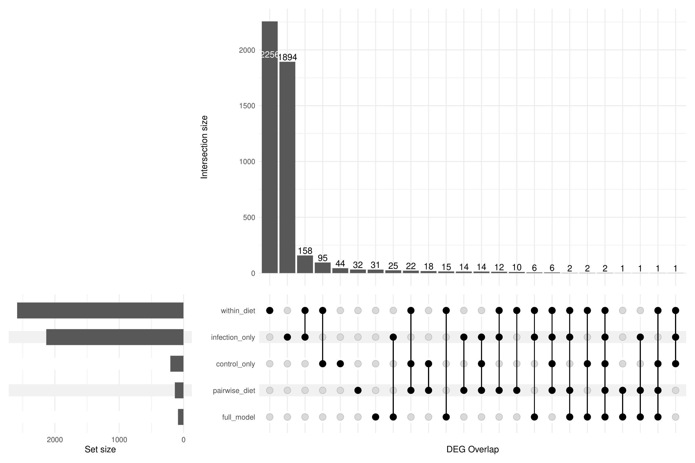
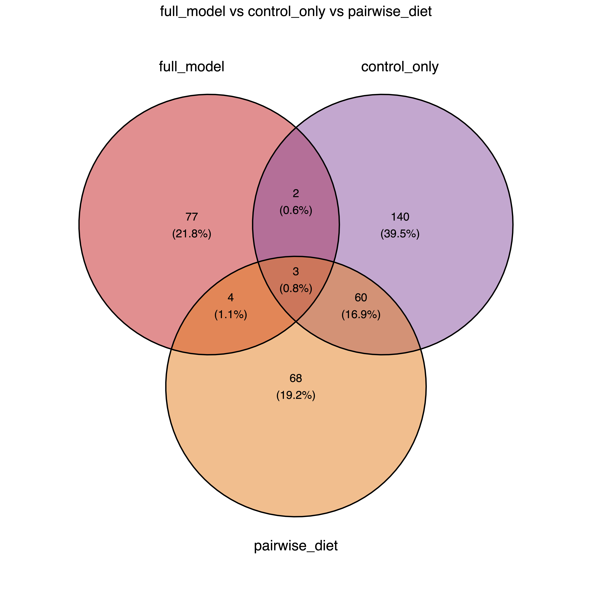
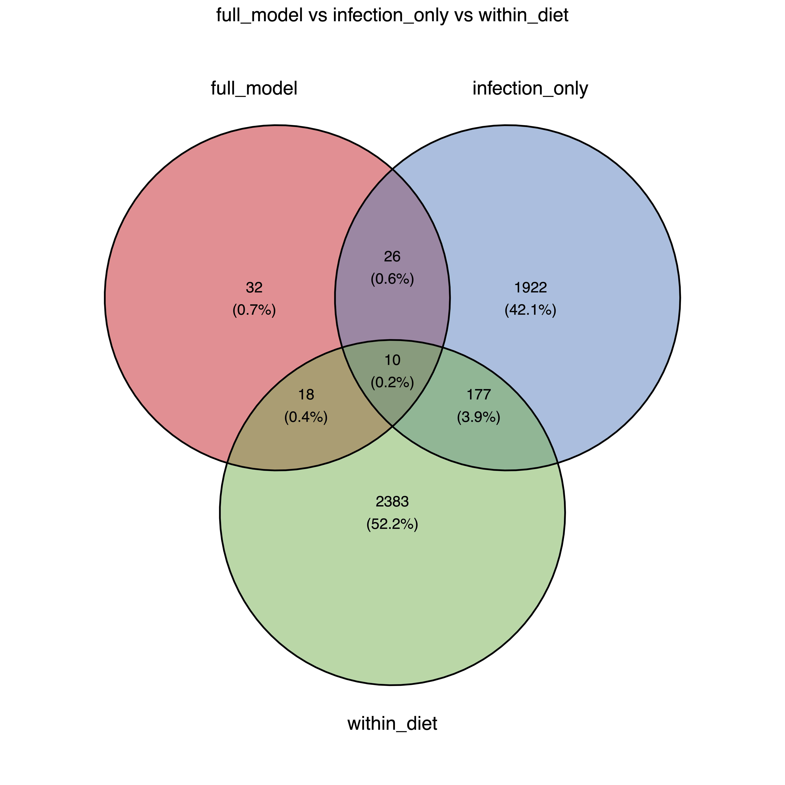
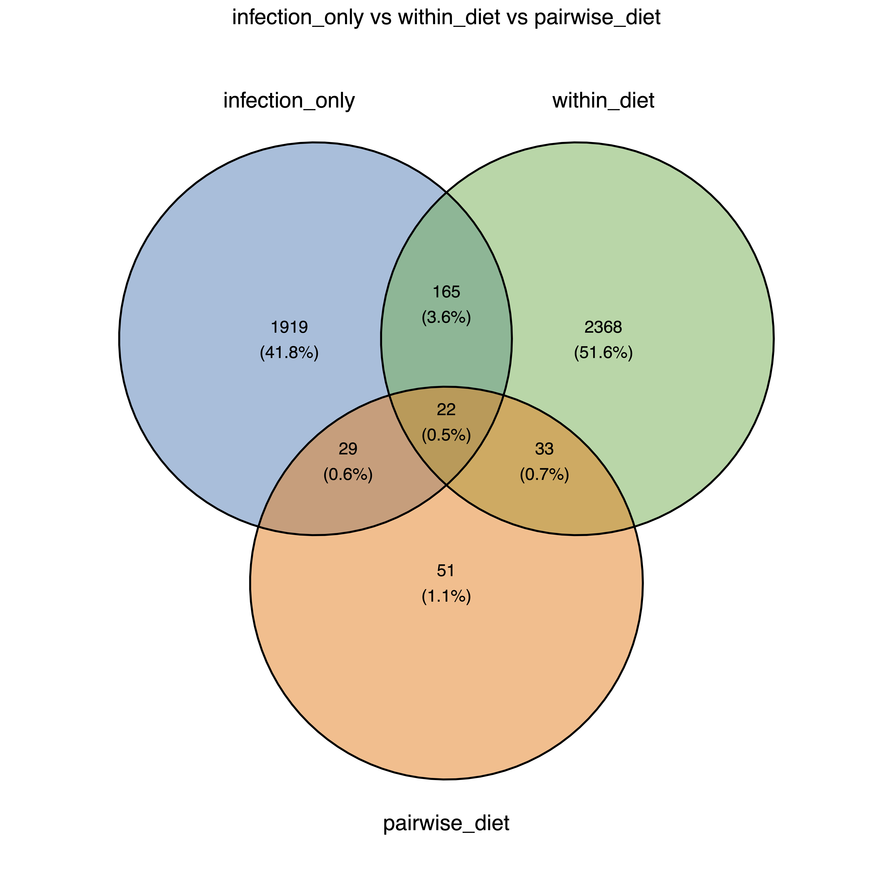
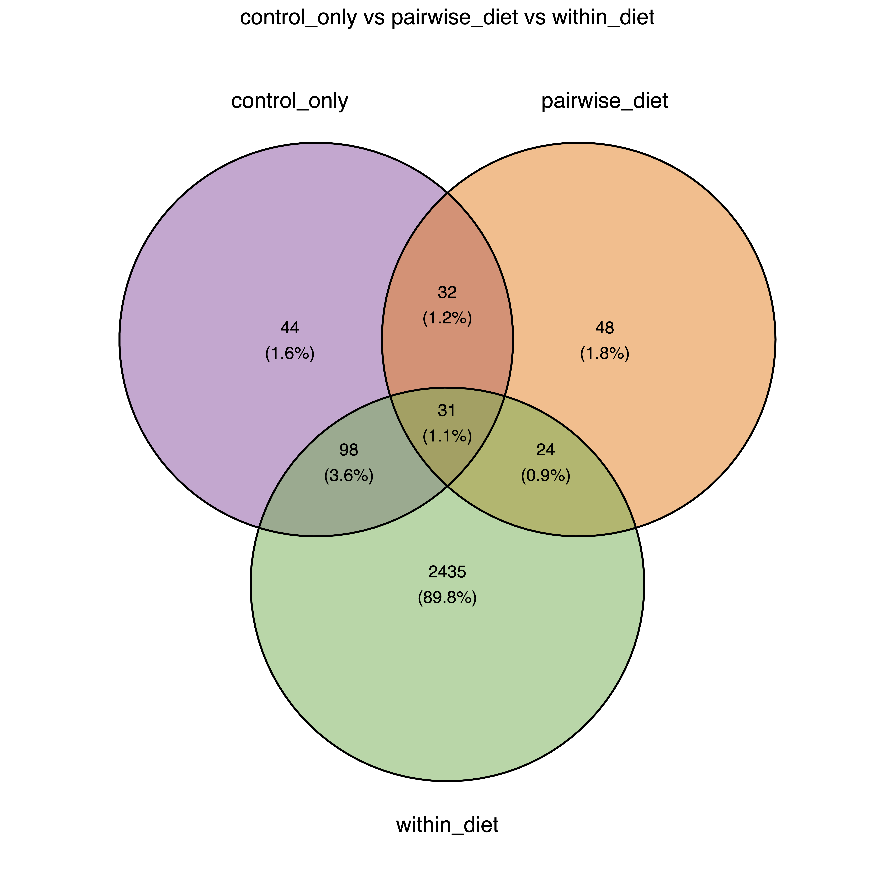
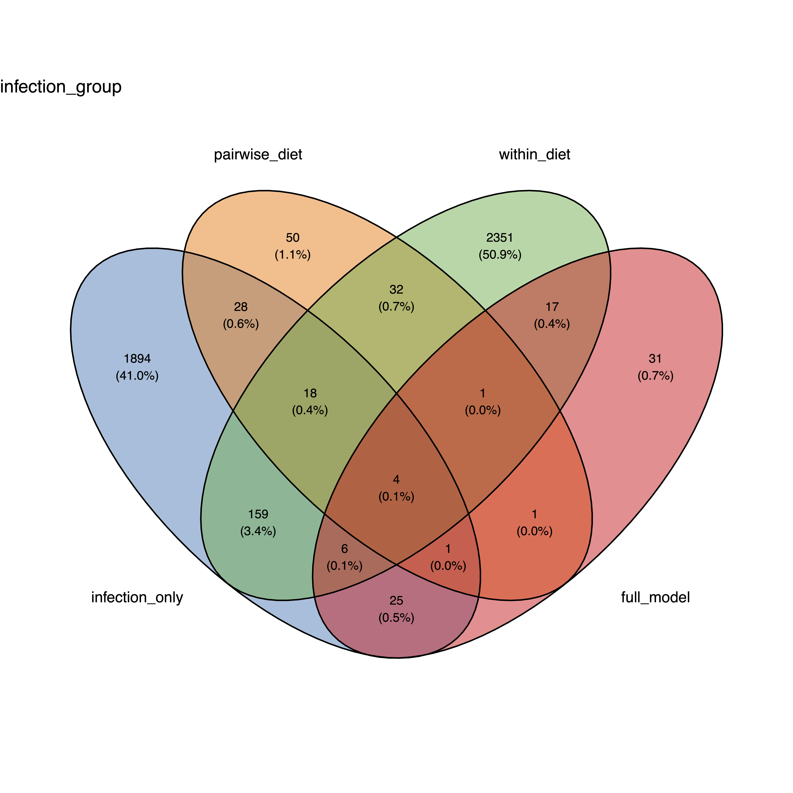
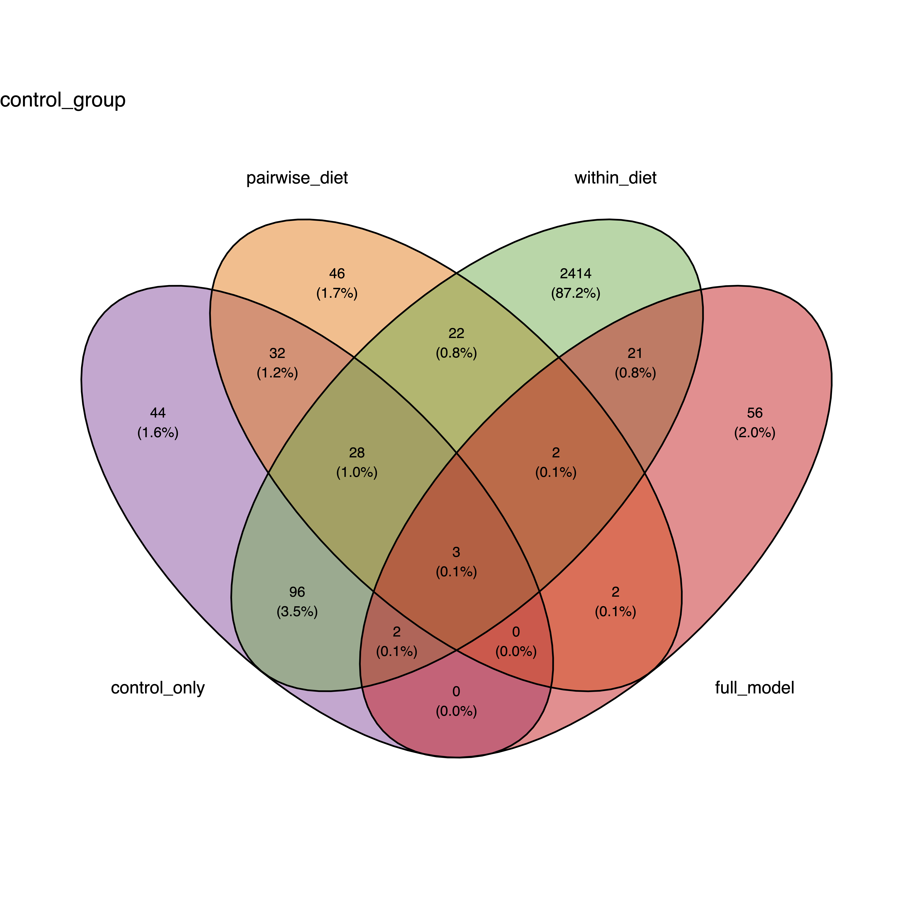
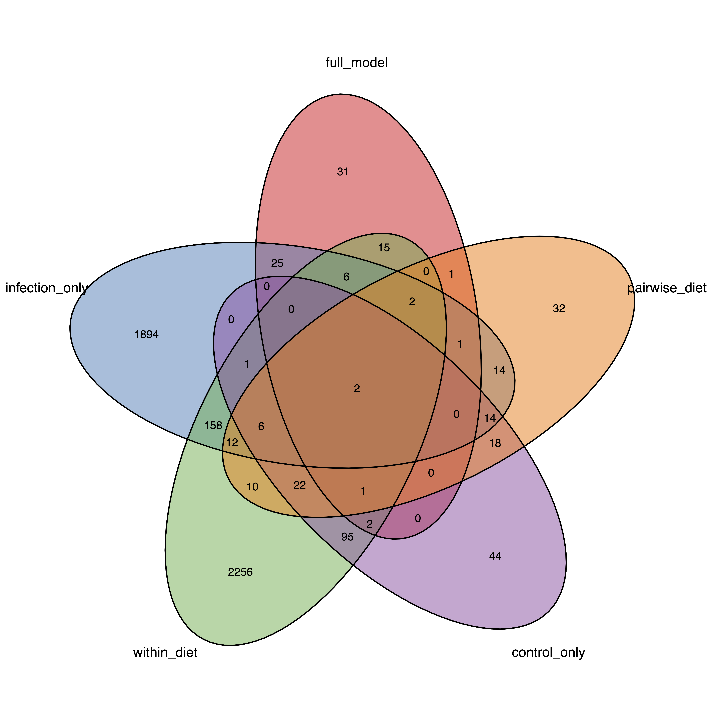

DEG Overlap Analysis
Last updated: 2026-05-01
Checks: 2 0
Knit directory:
gregaria-diet-infection-interaction/
This reproducible R Markdown analysis was created with workflowr (version 1.7.2). The Checks tab describes the reproducibility checks that were applied when the results were created. The Past versions tab lists the development history.
Great! Since the R Markdown file has been committed to the Git repository, you know the exact version of the code that produced these results.
Great! You are using Git for version control. Tracking code development and connecting the code version to the results is critical for reproducibility.
The results in this page were generated with repository version f243e8f. See the Past versions tab to see a history of the changes made to the R Markdown and HTML files.
Note that you need to be careful to ensure that all relevant files for
the analysis have been committed to Git prior to generating the results
(you can use wflow_publish or
wflow_git_commit). workflowr only checks the R Markdown
file, but you know if there are other scripts or data files that it
depends on. Below is the status of the Git repository when the results
were generated:
Ignored files:
Ignored: .RData
Ignored: .Rhistory
Ignored: .Rproj.user/
Untracked files:
Untracked: analysis/.DS_Store
Untracked: analysis/Publish All Files
Untracked: analysis/csv-overlap.R
Untracked: analysis/filter-csv.R
Untracked: analysis/filter_table_with_rRNA.csv
Untracked: analysis/filtered_table_NO_rRNA.csv
Untracked: analysis/non_overlapping_rows.csv
Unstaged changes:
Modified: .DS_Store
Deleted: GeneID_Description_Table.csv
Deleted: analysis/DESeq2_FINAL_Annotated_Table.csv
Modified: analysis/_site.yml
Note that any generated files, e.g. HTML, png, CSS, etc., are not included in this status report because it is ok for generated content to have uncommitted changes.
These are the previous versions of the repository in which changes were
made to the R Markdown (analysis/overlap.Rmd) and HTML
(docs/overlap.html) files. If you’ve configured a remote
Git repository (see ?wflow_git_remote), click on the
hyperlinks in the table below to view the files as they were in that
past version.
| File | Version | Author | Date | Message |
|---|---|---|---|---|
| html | 763fb5f | emily-cbaker | 2026-04-29 | Build site. |
| html | 5034907 | emily-cbaker | 2026-04-28 | Build site. |
| Rmd | d07f0a0 | emily-cbaker | 2026-04-28 | HTML Site Additions |
| html | d07f0a0 | emily-cbaker | 2026-04-28 | HTML Site Additions |
Heatmap
This heatmap shows the presence of each DEG that appears in the full model and one subset. Note that the only values in the heatmap are 0 or 1, where 0 is the absence of that gene in the subset and 1 is the presence.

We can then see the overlapping genes that are likely primarily involved in infection in the pink rectangle and genes that are likely involved mainly in diet in the orange rectangle.

UpSetR Plot
This is another form of visualization to see the different overlapping groups of genes across all 5 tests.

Venn Diagrams
The first 4 Venn diagrams are broken down into 4 groups since the full Venn diagram can be difficult to interpret alone. The last diagram shows the overlap between all 5 iterations.
Full Model vs Control vs Pairwise Diet
The genes in the center overlap between these 3 subsets are likely genes mainly involved in response to changes in the organism’s diet, as there should be no immune response genes activated within the control group.

Full Model vs Infected vs Within Diet
The common genes between these 3 groups are likely genes that are related to immune response, due to the inclusion of the infected samples subgroup.

Infected vs Within Diet vs Pairwise Diet
Again, this overlap should show mainly genes involved in immune response

Control vs Pairwise Diet vs Within Diet
The overlapping group in this

Infected vs Pairwise Diet vs Within Diet vs Full Model

Control vs Pairwise Diet vs Within Diet vs Full Model

Full Venn Diagram
